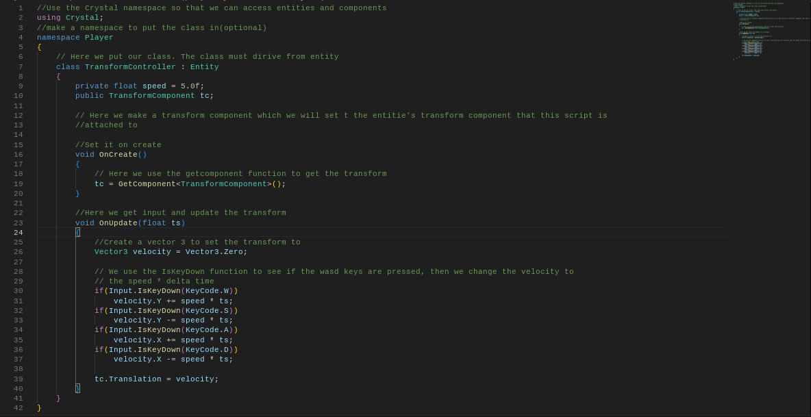

Crystal Docs
NOTICE: Please bear with me, all the features of the Scripting may not be available, and the docs are still being worked on.
Installation:
To download for Windows x64, go to the github page and download the latest installer (.msi) and follow the instructions.
Test the engine by going to Scenes -> Physics2D.crystal and drag it onto the viewport.
Sometimes I forget to upload the correct scene so if WASD controls don't work check the console.
Scripting:
To get started with Crystal scripting, first make sure your install includes scripting
After obtaining a scripting install, go to the a project folder and open up
the project file (.sln for VS) and go to a project and go to its .sln file
From there, you can start writing your own scripts to control entities!
Script Syntax:
See Full Scripting Syntax and API
To get started create a .cs file under Source in Crystal-ScriptCore, then make sure to add "using Crystal" at the top.
Then add a namespace if you want and make a public class that derives from Entity: public class MyClass : Entity
Starter script example:
The OnUpdate function is called every frame with "ts" being the deltaTime
Rigidbody based movement script:

In this script, I use the GetComponent<> Function to get the Rigidbody 2D of the entity, then I modify it's velocity to move it.
It also uses the Input class to see what keys are pressed and respond accordingly by applying impulse force.
You can use the OnCreate method like a constructor, use it to initialize components when script is created at runtime.
Transform based movement:
Transform based movement script:

This is what a general script would look like.
In the Rigidbody script, the velocity was not multiplied with delta time(ts), so it was dependent on your FPS
Editor:
See Editor Docs